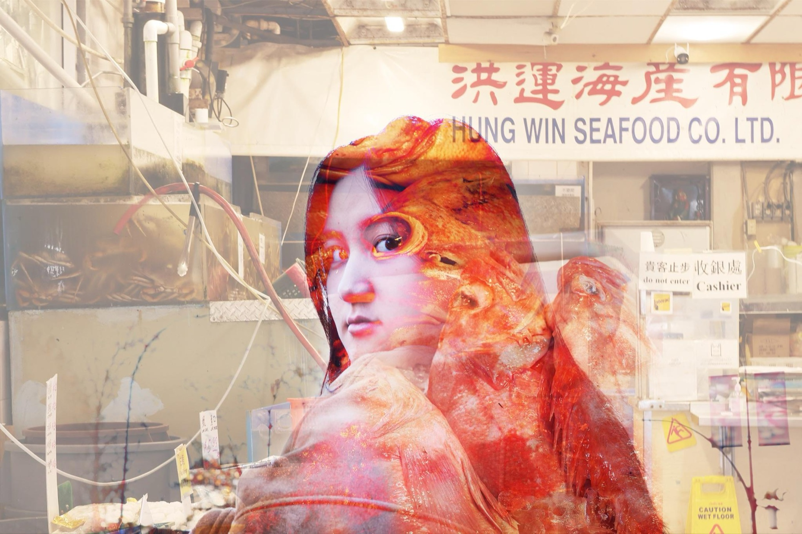
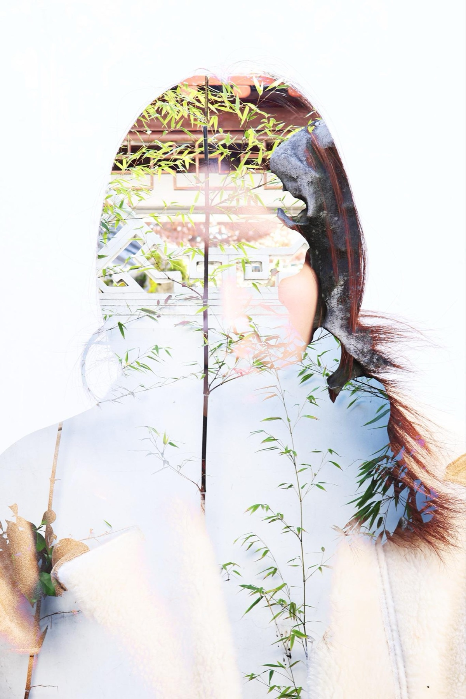
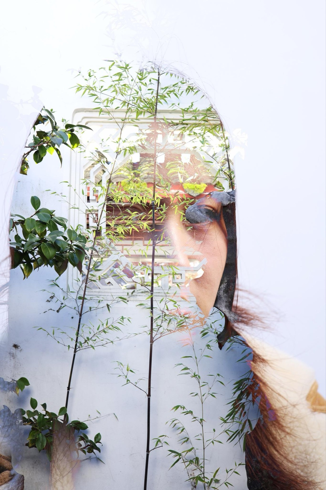
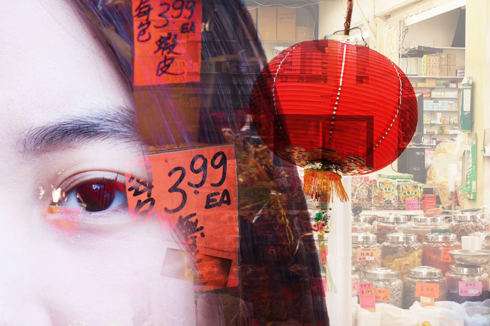

01
The Chinese Echo




A personal photography series exploring the layered identity of Vancouver's Chinatown — and my own. Having grown up between China and Canada, I used double- and triple-exposure techniques to fuse self-portraits with the textures of the neighbourhood: a seafood market, an herbal shop, a Suzhou-style garden, the glow of the Chinatown gate. The result is a set of images about nostalgia, hybridity, and what gets lost and gained in translation between cultures.